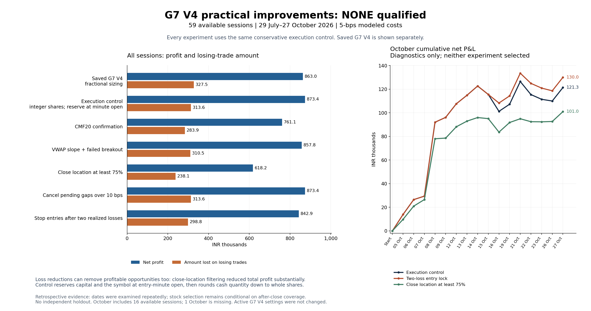

59 available sessions, 29 July?27 October 2026. No candidate improved both full-period profit and losing-trade amount versus the same execution control. Saved G7 V4 selection and +0.6% / +0.1% protection remain unchanged. Results use 5bps modeled round-trip costs unless stated otherwise.
The control reserves capital and the symbol from the entry minute open and floors cash-share quantities. It preserves native entry prices, timestamps and exit logic. Two ambiguous same-symbol reentries are blocked: BHEL on 27 August and TVSMOTOR on 28 August. Their original losses total Rs12,500; integer rounding offsets Rs2,038.05, producing a net correction of Rs10,461.95. This is an execution-accounting correction, not new selection alpha.

G-3 published backtest is a reference, not a sixth experiment. It covers the same 59 available sessions and retains its published fractional cash-share sizing and 5bps modeled round-trip costs. The G7 conservative execution control uses integer shares and reserves capacity at entry-minute open, so G3 has not been normalized to that control. The chart retains the original G7 comparisons; G3 is added to the tables. G3 source, fingerprint and reconciliation.
| policy | trades | wins | losses | win_rate_pct | net_pnl_rs | negative_trade_sum_abs_rs | daily_close_drawdown_rs |
|---|---|---|---|---|---|---|---|
| Saved G7 V4 | 424 | 336 | 88 | 79.25 | 862,964.92 | 327,541.57 | 21,492.82 |
| Conservative execution control | 422 | 336 | 86 | 79.62 | 873,426.86 | 313,575.53 | 21,430.99 |
| CMF20 confirmation | 376 | 298 | 78 | 79.26 | 761,052.91 | 283,921.25 | 31,897.60 |
| VWAP slope + failed breakout | 417 | 332 | 85 | 79.62 | 857,767.65 | 310,465.44 | 21,430.99 |
| Directional close location >=75% | 299 | 235 | 64 | 78.60 | 618,226.42 | 238,085.47 | 12,347.53 |
| Cancel pending open gaps >10bps | 422 | 336 | 86 | 79.62 | 873,426.86 | 313,575.53 | 21,430.99 |
| Stop new entries after two realized losses | 400 | 319 | 81 | 79.75 | 842,866.75 | 298,830.50 | 15,472.40 |
| G-3 published backtest | 553 | 395 | 158 | 71.43 | 1,212,277.50 | 619,419.06 | 35,925.20 |
| policy | trades | wins | losses | win_rate_pct | net_pnl_rs | negative_trade_sum_abs_rs | daily_close_drawdown_rs |
|---|---|---|---|---|---|---|---|
| Saved G7 V4 | 121 | 83 | 38 | 68.60 | 121,137.93 | 146,722.48 | 21,492.82 |
| Conservative execution control | 121 | 83 | 38 | 68.60 | 121,346.50 | 145,855.01 | 21,430.99 |
| CMF20 confirmation | 107 | 74 | 33 | 69.16 | 82,540.34 | 130,281.93 | 31,897.60 |
| VWAP slope + failed breakout | 120 | 83 | 37 | 69.17 | 124,456.60 | 142,744.92 | 21,430.99 |
| Directional close location >=75% | 85 | 59 | 26 | 69.41 | 100,950.48 | 97,189.78 | 12,347.53 |
| Cancel pending open gaps >10bps | 121 | 83 | 38 | 68.60 | 121,346.50 | 145,855.01 | 21,430.99 |
| Stop new entries after two realized losses | 109 | 76 | 33 | 69.72 | 129,985.96 | 131,109.98 | 14,920.48 |
| G-3 published backtest | 154 | 88 | 66 | 57.14 | 114,099.46 | 273,411.63 | 35,925.20 |
Strong-close filtering reduces the losing-trade amount by 24.07%, but sacrifices Rs255,200.44 net profit and misses 104 control winners. The two-loss lock improves October by Rs8,639.46, but reduces full-period profit by Rs30,560.11 and removes 17 winners against only five losers. Its minute-close drawdown falls only about 1.5%, despite a 28% daily-close improvement. VWAP filtering improves October but loses money relative to control over all sessions. Gap cancellation changes no executed trades.
| day | Saved G7 V4 | Conservative execution control | CMF20 confirmation | VWAP slope + failed breakout | Directional close location >=75% | Cancel pending open gaps >10bps | Stop new entries after two realized losses | G-3 published backtest |
|---|---|---|---|---|---|---|---|---|
| 2026-10-05 | 13,900.00 | 13,882.18 | 0.00 | 13,882.18 | 9,744.64 | 13,882.18 | 13,882.18 | 24,149.06 |
| 2026-10-06 | 12,612.90 | 12,583.53 | 12,583.53 | 12,583.53 | 11,203.12 | 12,583.53 | 12,583.53 | -1,625.14 |
| 2026-10-07 | 2,965.98 | 2,956.34 | 2,956.34 | 2,956.34 | 5,554.68 | 2,956.34 | 2,956.34 | 1,192.06 |
| 2026-10-08 | 62,742.34 | 62,568.95 | 56,496.38 | 62,568.95 | 51,503.81 | 62,568.95 | 62,568.95 | 54,772.07 |
| 2026-10-09 | 4,158.11 | 4,115.10 | 4,115.10 | 4,115.10 | 555.06 | 4,115.10 | 4,115.10 | 4,795.16 |
| 2026-10-12 | 11,595.05 | 11,504.61 | 11,504.61 | 14,614.70 | 9,575.70 | 11,504.61 | 11,504.61 | 22,989.07 |
| 2026-10-13 | 6,705.80 | 7,223.34 | 8,152.02 | 7,223.34 | 4,786.86 | 7,223.34 | 7,223.34 | -170.01 |
| 2026-10-14 | 7,823.00 | 7,805.32 | 7,805.32 | 7,805.32 | 3,033.33 | 7,805.32 | 7,805.32 | 27,617.38 |
| 2026-10-15 | -7,161.09 | -7,142.33 | -7,142.33 | -7,142.33 | -920.61 | -7,142.33 | -7,142.33 | -15,343.47 |
| 2026-10-16 | -14,331.73 | -14,288.66 | -7,190.50 | -14,288.66 | -11,426.92 | -14,288.66 | -7,236.22 | -20,581.73 |
| 2026-10-19 | 6,024.35 | 6,030.50 | 6,030.50 | 6,030.50 | 8,146.95 | 6,030.50 | 6,030.50 | 13,990.47 |
| 2026-10-21 | 19,297.68 | 19,212.21 | 11,209.15 | 19,212.21 | 3,178.77 | 19,212.21 | 19,212.21 | 21,849.70 |
| 2026-10-22 | -11,168.90 | -11,046.65 | -20,762.26 | -11,046.65 | -2,501.53 | -11,046.65 | -8,612.70 | -18,064.57 |
| 2026-10-23 | -3,988.99 | -3,986.06 | -3,986.06 | -3,986.06 | -94.82 | -3,986.06 | -3,986.06 | -191.45 |
| 2026-10-26 | -1,466.10 | -1,474.79 | -7,149.27 | -1,474.79 | 278.22 | -1,474.79 | -2,321.72 | -5,458.67 |
| 2026-10-27 | 11,429.53 | 11,402.91 | 7,917.82 | 11,402.91 | 8,333.22 | 11,402.91 | 11,402.91 | 4,179.53 |
Costs are recomputed from actual rounded exposure. Each two-loss lock is recalculated from realized after-cost exits at the tested fee. The extra 4bps cases approximate execution drag; they do not replay spread or change fill prices. At 30bps, October control turns negative at Rs29,399.04 loss.
| cost_bps | policy | 5 | 9 | 15 | 19 | 30 | 34 |
|---|---|---|---|---|---|---|---|
| Directional close location >=75% | 618,226.42 | 558,636.75 | 469,252.24 | 409,662.56 | 245,790.96 | 186,201.29 | |
| CMF20 confirmation | 761,052.91 | 686,087.95 | 573,640.52 | 498,675.56 | 292,521.92 | 217,556.96 | |
| Conservative execution control | 873,426.86 | 789,282.01 | 663,064.74 | 578,919.89 | 347,521.56 | 263,376.71 | |
| Cancel pending open gaps >10bps | 873,426.86 | 789,282.01 | 663,064.74 | 578,919.89 | 347,521.56 | 263,376.71 | |
| Stop new entries after two realized losses | 842,866.75 | 763,108.41 | 576,218.99 | 504,846.84 | 308,573.40 | 237,201.24 | |
| Saved G7 V4 | 862,964.92 | 778,164.92 | 650,964.92 | 566,164.92 | 332,964.92 | 248,164.92 | |
| VWAP slope + failed breakout | 857,767.65 | 774,622.16 | 649,903.93 | 566,758.44 | 338,108.35 | 254,962.86 |
| cost_bps | policy | 5 | 9 | 15 | 19 | 30 | 34 |
|---|---|---|---|---|---|---|---|
| Directional close location >=75% | 100,950.48 | 84,016.71 | 58,616.05 | 41,682.28 | -4,885.59 | -21,819.36 | |
| CMF20 confirmation | 82,540.34 | 61,214.11 | 29,224.75 | 7,898.52 | -50,748.63 | -72,074.87 | |
| Conservative execution control | 121,346.50 | 97,227.22 | 61,048.29 | 36,929.00 | -29,399.04 | -53,518.32 | |
| Cancel pending open gaps >10bps | 121,346.50 | 97,227.22 | 61,048.29 | 36,929.00 | -29,399.04 | -53,518.32 | |
| Stop new entries after two realized losses | 129,985.96 | 108,259.71 | 66,675.69 | 47,147.21 | -6,556.09 | -26,084.57 | |
| Saved G7 V4 | 121,137.93 | 96,937.93 | 60,637.93 | 36,437.93 | -30,112.07 | -54,312.07 | |
| VWAP slope + failed breakout | 124,456.60 | 100,537.28 | 64,658.32 | 40,739.00 | -25,039.10 | -48,958.42 |
| policy | minute_close_drawdown_rs | worst_intraday_day_pnl_rs |
|---|---|---|
| Saved G7 V4 | 36,994.82 | -18,871.98 |
| Conservative execution control | 36,923.67 | -18,840.73 |
| CMF20 confirmation | 42,043.62 | -21,586.57 |
| VWAP slope + failed breakout | 36,923.67 | -18,840.73 |
| Directional close location >=75% | 25,908.51 | -20,370.43 |
| Cancel pending open gaps >10bps | 36,923.67 | -18,840.73 |
| Stop new entries after two realized losses | 36,364.75 | -18,281.81 |
Daily-close drawdown misses open-position fluctuations. The control minute-close drawdown is Rs36,923.67 versus Rs21,430.99 at daily closes. Minute marks still exclude intraminute extremes and market impact.
| policy | period | eligible | failure_reasons |
|---|---|---|---|
| CMF20 confirmation | development | False | net profit reduced; loss amount reduction below10%; win rate reduced; winner retention below95% |
| VWAP slope + failed breakout | development | False | net profit reduced; loss amount reduction below10%; loss count not reduced; win rate reduced; insufficient changed trades/days |
| Directional close location >=75% | development | False | net profit reduced; win rate reduced; winner retention below95%; trade retention below80% |
| Cancel pending open gaps >10bps | development | False | loss amount reduction below10%; loss count not reduced; insufficient changed trades/days |
| Stop new entries after two realized losses | development | False | net profit reduced; loss amount reduction below10%; loss count not reduced; win rate reduced; larger daily-close drawdown |
The development decision was locked before later-period statistics were tabulated. No replacement was selected from October. All dates were previously examined in other research: earlier entry, failure-exit, indicator and protection experiments mean this is retrospective evidence, without an independent holdout.
The upstream source checks OI coverage for every configured time, then can exclude a whole stock-day before ranking. This permits missing-data selection bias; the existing 603 selected opportunities cannot restore omitted stocks or quota replacements. Independent inspection of 21 legacy and 116 production replay artifacts found no afternoon-only missing-OI example. A recorded case excludes GODFRYPHLP for all of 25 September because its 09:20 OI bar is absent. Inspected 26/27 October sources each have 213 stocks and no required OI/equity-minute misses. Full as-of universe regeneration across all 59 dates remains undone. Missing 24/25 August and 1 October source sessions are excluded, rather than invented as zero-P&L days.
Signals use futures OI; execution prices and rounded sizing use cash-equity candles. This is not a lot-sized futures or options backtest. No live or paper configuration was changed.
192 tests passed. Independent audits reconciled executed ledgers, all 59 daily rows, October totals, integer exposure, cost-specific locks and minute-close terminal equity. Source run passed replay verification and manifest checks.